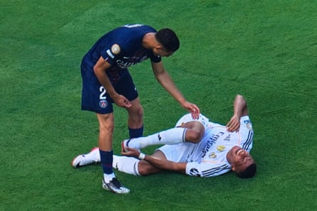

The first drinks break was unplanned. It came six minutes ahead of schedule, but Real Madrid were grateful for the respite. They wandered to the touchline, dazed and confused, and reached for the water bottles. They looked to Xabi Alonso and hoped for answers. After 24 minutes of being pummelled by Paris Saint-Germain , though, the thought occurred that the players in white would have been better off asking for smelling salts.
It is never a good sign when the emergency team talk takes place with more than an hour left. PSG had just stormed into a 3-0 lead, Fabián Ruiz scoring his second after a stunning combination between the exceptional Ousmane Dembélé and the flying Achraf Hakimi on the right, and to be honest the scoreline felt kind on Madrid. The New Jersey sun was beating down but PSG were merciless. Lads, it’s 33C. Any chance of slowing down?
Think again. This was the best team in the world giving the most famous team in the world an almighty slapdown. Collectivism outdid individualism during this 4-0 demolition. PSG delighted in the suffering. They had no need to prove there is life after Kylian Mbappé – they did that when they won the Champions League with a stunning final performance against Inter – but they still went ahead and emphasised the point with force, eloquence and no little brilliance.
It is partly down to the structure implemented by Luis Enrique. Mentality also comes into it, though. Saying that PSG wanted this Club World Cup semi-final more might sound reductive but that does not make it untrue. This is a team shorn of passengers. Dembélé now has 35 goals this season but do not underestimate his work off the ball. Nobody remembers the 28-year-old playing like this for Barcelona. Nobody saw the France forward becoming the ultimate team player when his unhappy spell at Barça came to an end.
Luis Enrique has transformed Dembélé. Madrid, by contrast, are kidding people when they try to press. Alonso is trying to introduce a system after replacing the more laissez-faire Carlo Ancelotti, but it is unclear if any system can survive Mbappé. This was his first game against PSG since leaving them under a cloud in 2024 and it did not go well. Doubts over whether Alonso’s Madrid will function properly with Mbappé, Jude Bellingham and Vinícius Júnior in the same team persist. It is notable that Madrid were more fluid with the youngster Gonzalo García leading the line while Mbappé was recovering from a stomach bug. Vinícius and Bellingham both looked happier.
Yet Mbappé was always going to come in for his first start of the tournament here. In his head, the narrative demanded that he beat his old side single-handedly, but the reality was harsher. It was hammered home as Mbappé cut inside and prepared to shoot in the 38th minute, only for João Neves to leave him on the turf with a crunching block.
Neves does not turn 21 until September. He is a wonderful, intricate midfielder but he plays with a snarl and the beauty for Luis Enrique is that the Portugal international is not alone. Khvicha Kvaratskhelia is another one. Look at how the Georgian dispossessed Mbappé on the edge of the PSG area and followed it up with a nutmeg on Arda Güler. There were also plenty of electrifying runs to terrify Fede Valverde, who had the misfortune of filling in at right-back with Trent Alexander-Arnold injured.
Achraf Hakimi leans over Kylian Mbappé after he was floored by a João Neves challenge.Photograph: Pamela Smith/AP
Madrid were a shapeless shambles. The defence was a mess, the midfield a void. It was amazing how often PSG’s defenders were able to stride forward and play into feet. There was no resistance. Désiré Doué and Kvaratskhelia had so much space. Vitinha, Neves and Ruiz did as they pleased in the middle. Madrid are paying for their failure to replace Toni Kroos and Luka Modric, who made his final Madrid appearance as a substitute before he moves to Milan.
They do not control these games any more. They just get outpassed and overrun. The easy line is that Madrid signed the wrong French forward when they nabbed Mbappé and left Dembélé in Paris. Yet PSG are not about stars. Dembélé’s goal for 2-0 came because he forced Antonio Rüdiger into a comedy error in ninth minute. He had also pressed for the opening goal from Ruiz, taking advantage of a heavy touch from Raúl Asencio.
There is beauty to Luis Enrique’s remorseless machine, though. For the third goal, Dembélé dropped deep, the movement subtle as he pulled into space. He played a reverse pass to Hakimi, again surging beyond poor Fran García, and Ruiz did the rest after being found by PSG’s flying right-back.
It was so slick. PSG eased off in the second half, saving themselves before facing Chelsea in the final on Sunday, eventually making it 4-0 after Bradley Barcola came on to set up Gonçalo Ramos to fire past Thibaut Courtois. Look what you left behind, Kylian. If only you were a bit more like Dembélé.